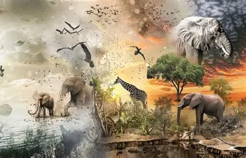
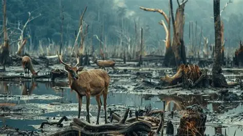
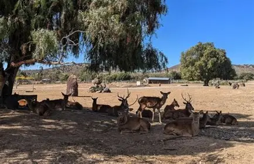

Causas
La deforestación, la contaminación, el tráfico ilegal de animales, la sobreexplotación de recursos naturales y el cambio climático son algunas de las principales causas de la pérdida de especies.
Un problema ambiental que amenaza la biodiversidad, altera los ecosistemas y pone en riesgo el equilibrio de la vida en la Tierra.
Saber másCada especie desempeña una función esencial dentro de su ecosistema. Sin embargo, la destrucción de hábitats, la contaminación y el cambio climático están provocando la desaparición acelerada de miles de especies animales y vegetales alrededor del mundo.

La deforestación, la contaminación, el tráfico ilegal de animales, la sobreexplotación de recursos naturales y el cambio climático son algunas de las principales causas de la pérdida de especies.

La desaparición de especies altera las cadenas alimentarias, reduce la biodiversidad y debilita los ecosistemas, afectando también la calidad de vida de las personas.

Proteger los hábitats naturales, fortalecer las leyes de conservación, combatir la caza furtiva y promover la educación ambiental son acciones fundamentales para preservar la biodiversidad.